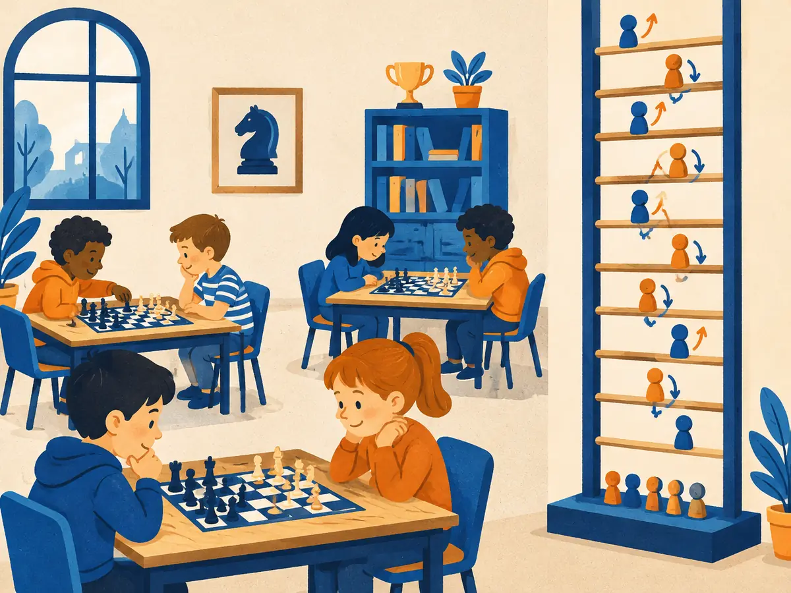

Human eval, pairwise & Elo
For an open-ended question there is no answer key. The final judge of "is this a good answer?" is a person. This lesson covers how to ask people well (compare two answers, don't score one), how noisy their answers are, and how thousands of "A beat B" votes become a leaderboard with Elo and Bradley–Terry ratings.
By the end you can
- Explain why human preference is the gold standard for open-ended quality, why it is noisy, and how to measure that noise.
- Compute an Elo update by hand, and say why leaderboards now fit Bradley–Terry instead.
- Read an Arena-style leaderboard: what a rating gap means and when two models are effectively tied.
Take your best guess. Being wrong now helps the right answer stick later.
Model A's Elo rating is 100 points higher than model B's. How often should A's answer win a head-to-head vote?
- About 50%: 100 points is nothing
- About 64%
- About 90%
- Every time
Most human evals of chatbots ask "which of these two answers is better?" rather than "rate this answer from 1 to 10". Why?
- Comparisons are cheaper to store
- 1–10 scores are illegal to collect
- People are far more consistent at comparing two things than at placing one thing on an absolute scale
- Pairwise votes need no statistics
Why ask humans at all?
A benchmark with an answer key (M4.2) can check that $17 \times 23 = 391$. It cannot check whether an email draft sounds right, whether an explanation is pitched at the right level, or whether a refusal was reasonable. For these open-ended tasks the thing we actually care about is what people prefer. Every other judge, including the LLM judges of M4.4, is trusted only as far as it agrees with careful human ratings.
But humans are a noisy, biased instrument:
- They disagree. Taste differs, and many comparisons are genuinely close.
- They are swayed by surface features. Longer, more confident, nicely formatted answers tend to win, even when they're not more correct.
- They can't always verify. A non-expert can't tell a correct proof or a subtle bug from a plausible-looking wrong one. Specialist domains need specialist raters.
- They are slow and expensive, and they get tired. Quality drifts over a long session.
Absolute ratings vs pairwise preference
There are two basic ways to ask. Absolute rating: show one answer and ask for a score, say 1–7. Pairwise preference: show two answers to the same prompt, side by side and anonymised, and ask which is better (with "tie" as an option).
Absolute scales suffer from calibration problems: each rater uses the scale differently, scores bunch near the top, and drift over time. Pairwise judgements are easier and more consistent, because the other answer acts as the reference point. The price is that you only learn relative quality, and you need many pairs. This is the same reason preference data for RLHF is collected as pairs (M3.2).
How noisy? Measure agreement
Give the same pairs to two raters and count how often they agree. Raw agreement flatters you, because two coin-flippers agree 50% of the time on a two-way choice. Cohen's kappa (Cohen, 1960) corrects for chance:
$$\kappa = \frac{p_o - p_e}{1 - p_e}$$$p_o$ is the observed agreement rate. $p_e$ is the agreement you'd expect by chance, given how often each rater picks each option. $\kappa = 1$ is perfect agreement and $\kappa = 0$ is no better than chance. If two raters agree on 80% of pairs ($p_o = 0.8$) and each picks A and B equally often ($p_e = 0.5$), then $\kappa = (0.8 - 0.5)/(1 - 0.5) = 0.6$. For more than two raters, Krippendorff's alpha plays the same role.
Agreement on close calls is lower than people expect. In the MT-Bench study (Zheng et al., 2023), expert human raters agreed with each other on roughly 81% of pairs once ties were set aside, and GPT-4 as a judge agreed with them about as often. Exact figures vary with the task and the rater pool, but the lesson holds: human agreement is the ceiling. No judge, human or model, can be expected to "agree with humans" much more than humans agree with each other.
Elo: turn wins and losses into ratings
Pairwise votes give you a pile of "A beat B" results. To rank many models you need one number per model. Chess solved this in the 1960s with Arpad Elo's rating system. Its first step is to predict each game from the rating gap:
$$E_A = \frac{1}{1 + 10^{(R_B - R_A)/400}}$$$R_A$ and $R_B$ are the two ratings. $E_A$ is A's expected score: its probability of winning, counting a tie as half a win. The constant 400 sets the scale, so a 400-point gap means 10-to-1 odds. After the game, the second step moves each rating by the surprise:
$$R_A \leftarrow R_A + K\,(S_A - E_A)$$$S_A$ is A's actual score (1 for a win, ½ for a tie, 0 for a loss), and $K$ is the step size. B gets the mirror-image update, so the points A gains are exactly the points B loses.
If $K$ looks like a learning rate, that's because it is one. Elo's update is one step of stochastic gradient ascent (P2.2) on the log-likelihood of a logistic model of who wins.
Explain like I'm 5

The kids in a chess club each have a token on a ladder on the wall. After every game, the winner's token climbs and the loser's token slides down.
Here's the clever part: if a kid near the top beats a kid near the bottom, everyone expected that, so the tokens barely move. If the kid near the bottom wins, that's a surprise, so the tokens jump a lot.
After lots of games, the ladder shows who's strongest.
Where it breaks: kids get better with practice, so the ladder must keep chasing them. An LLM is frozen once released, so we can use every game ever played at once (that's Bradley–Terry, below).
Worked example
A is rated 1600, B is rated 1500, and $K = 32$.
- Expected score: $E_A = 1/(1 + 10^{(1500-1600)/400}) = 1/(1 + 10^{-0.25}) = 1/(1 + 0.562) = 0.640$. So $E_B = 0.360$.
- If A wins ($S_A = 1$): A gains $32 \times (1 - 0.640) = 11.5$ points, giving 1611.5. B drops to 1488.5.
- If B wins instead ($S_A = 0$): A loses $32 \times 0.640 = 20.5$ points, giving 1579.5. B rises to 1520.5.
- The upset moves ratings almost twice as much as the expected result, because there was more to learn from it.
A newcomer A is rated 1500 and plays B, rated 1700. This leaderboard uses $K = 16$. A wins.
- Rating gap $R_B - R_A =$
- A's expected score $E_A$ (two decimals) $=$
- Points A gains, $K(S_A - E_A) =$
- B's new rating $=$
From Elo to Bradley–Terry
Elo was built for chess players, whose skill changes over time. So it weights recent games more, and its answer depends on the order of the games and on the choice of $K$. A small $K$ reacts slowly. A large $K$ never settles: every vote jolts the ratings. A released model's weights are frozen, so there's no reason to let the 10,000th vote count more than the first.
The Bradley–Terry model (Bradley & Terry, 1952) makes the same prediction as Elo, but fits it once to all the votes. Each model $i$ gets a strength $\beta_i$, and
$$P(i \text{ beats } j) = \frac{e^{\beta_i}}{e^{\beta_i} + e^{\beta_j}} = \sigma(\beta_i - \beta_j)$$$\sigma$ is the logistic sigmoid, $\sigma(z) = 1/(1+e^{-z})$. The strengths are chosen by maximum likelihood, making the observed votes as probable as possible. That's just logistic regression, so the result doesn't depend on vote order. To show it on the familiar scale, set $R_i = \tfrac{400}{\ln 10}\,\beta_i + \text{const} \approx 173.7\,\beta_i + \text{const}$. Then $\sigma(\beta_i - \beta_j)$ is exactly Elo's $E$ formula.
You've met this model before. Training a reward model on pairs where answer $y_w$ was preferred to $y_l$ minimises $-\log \sigma\big(r(x, y_w) - r(x, y_l)\big)$ (M3.2). That is the Bradley–Terry loss. A reward model is a BT model whose "strength" is computed from the text of each answer.
Playground: online Elo vs Bradley–Terry
Model A is truly 100 points stronger, so it wins each battle with probability 0.64. Both start level. Change $K$, draw new battles, or shuffle the same battles into a different order.
Try K = 64, then K = 4: big steps never settle, tiny steps take hundreds of battles to arrive. Then press Shuffle order a few times. Elo's final gap jumps around, but the BT line doesn't move, because it only counts wins. BT is not exact either: with 400 votes its 95% confidence interval is roughly ±36 points, which is why leaderboards report intervals.
Arena-style leaderboards
Chatbot Arena (Chiang et al., 2024; now LMArena) turned this into a public leaderboard. A visitor types any prompt, two anonymous models answer side by side, and the visitor votes for A, B, a tie, or "both bad". Only after the vote are the model names revealed. The 2024 paper analysed about 240,000 votes, and the live site has collected millions since. The ratings come from a Bradley–Terry fit to all the votes. Arena moved from online Elo to BT in late 2023, for the reasons above.
Every rating comes with a 95% confidence interval. A common way to get one is the bootstrap: resample the votes with replacement, refit, repeat about a thousand times, and take the middle 95% of each model's ratings. (M4.6 covers the bootstrap properly.) Ranks are then reported with uncertainty too. A model's rank can be "1 + the number of models that are clearly better", so several models can share rank 1.
When reading a leaderboard, remember how small most gaps are. A 20-point lead means a 52.9% expected win rate. A 6-point lead means 50.9%, which is a coin flip. If two intervals overlap substantially, treat the models as tied for this population of users and prompts.
Arena-style evals have real strengths: prompts are fresh and diverse, which makes them hard to memorise (compare contamination), and the scale is huge. They also have known weaknesses. Hedge any single number:
- Who votes and what they ask: visitors skew toward technical users and English prompts. That may not be your users.
- Style over substance: length and markdown formatting win votes. Arena added a "style control" option in 2024 that models these features as extra terms in the regression.
- Unverified answers: voters rarely check whether a long technical answer is actually correct.
- Gaming: critics argue that testing many private variants and publishing only the best one inflates scores (Singh et al., 2025, "The Leaderboard Illusion"). The organisers dispute parts of this analysis.
Why does an upset move Elo ratings more than an expected win? And why do modern leaderboards fit Bradley–Terry to all votes instead of running Elo game by game?
Two models are both rated 1500. With $K = 32$, model A wins. What is A's new rating?
- 1532
- 1516
- 1508
- 1500: equal ratings mean nothing changes
Why did Arena-style leaderboards switch from online Elo to a Bradley–Terry fit?
- BT needs far fewer votes to rank a newly added model
- Elo has no way to count tie votes
- BT ratings use a different, more intuitive scale than Elo
- Models are frozen, so every vote should count equally, whatever its order
A leaderboard shows model X at 1287 (95% CI ±7) and model Y at 1281 (95% CI ±8). What's the best reading?
- They're statistically tied for these users; X's expected win rate over Y is only about 51%
- X is clearly better, since its rating is higher
- X wins about 60% of the time
- Y is better, because its interval is wider
The Bradley–Terry loss $-\log \sigma(s_w - s_l)$ also appears earlier in the course. Where?
- The next-token cross-entropy loss used in pretraining
- The attention softmax
- Training a reward model on human preference pairs (chosen vs rejected answer)
- The learning-rate schedule
Key takeaways
- Human preference is the gold standard for open-ended quality, but it's noisy and biased. Measure agreement (e.g. Cohen's $\kappa$), and treat it as the ceiling for any judge.
- Ask pairwise ("which is better?") rather than absolute scores: it's more consistent.
- Elo: $E_A = 1/(1+10^{(R_B-R_A)/400})$, then $R_A \leftarrow R_A + K(S_A - E_A)$. Ratings move by the surprise.
- Bradley–Terry fits the same model to all votes at once (logistic regression). It's what modern leaderboards and reward models use.
- Always read ratings with their confidence intervals. Gaps of a few points are coin flips.
In about 20 minutes: implement Elo, run it on simulated battles between four models, watch its result change when you shuffle the order, then fit Bradley–Terry by gradient ascent and bootstrap its confidence intervals. Runs free in your browser with numpy.
Adding cards schedules your first spaced review.